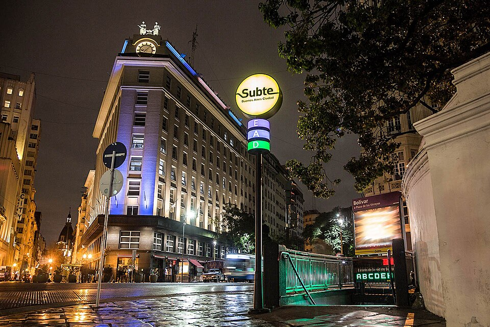

De Plaza de Mayo a Plaza Miserere en catorce minutos: se inauguró el subterráneo
El tren eléctrico del Anglo-Argentino corrió esta mañana bajo la Avenida de Mayo con coches de madera repletos de autoridades, y por la tarde el público lo tomó por asalto. Londres, París y Nueva York tienen desde hoy una compañera austral que llegó antes que Madrid.

El primer tren subterráneo de Iberoamérica y del hemisferio sur partió hoy de la estación Plaza de Mayo entre aplausos, bendiciones e himnos. En los coches de madera lustrada, traídos de Bélgica, viajaron autoridades nacionales y municipales, diplomáticos y los directores de la Compañía de Tramways Anglo-Argentina; catorce minutos después, tras deslizarse bajo la Avenida de Mayo con una suavidad que arrancó exclamaciones, la comitiva emergió en Plaza Miserere. Por la tarde se abrieron las puertas al público, y la ciudad entera quiso bajar: la compañía calcula que más de ciento cincuenta mil pasajeros estrenaron el túnel en la jornada, y a la noche todavía había colas en cada boletería.
La obra se hizo a la vista de todos y padeciéndola todos: durante más de dos años la Avenida de Mayo fue una trinchera a cielo abierto, con millares de obreros —muchos recién bajados de los barcos— cavando entre tablones, mientras los vecinos cruzaban por puentes de madera y los comercios protestaban por el polvo y el estruendo. El método fue el de zanja y bóveda: abrir la calle, construir el cajón de hormigón, taparlo y devolver el adoquín. Hubo que mudar caños y cables, apuntalar fachadas y sortear los cimientos de la avenida más orgullosa de la ciudad. Todo para ganar la única dirección que a Buenos Aires le quedaba libre: hacia abajo.
El apuro tiene explicación. Buenos Aires se ha convertido en pocas décadas en una de las grandes capitales del mundo: un millón y medio de habitantes, un puerto insaciable y un centro donde tranvías, carros y automóviles ya no caben; el propio Anglo-Argentino, dueño de la red de tranvías, promovió el túnel para descongestionar su superficie. Con la inauguración de hoy, la ciudad entra en un club contadísimo: Londres abrió su ferrocarril subterráneo hace cincuenta años, París estrenó su metropolitano en 1900, Nueva York, Boston y Berlín siguieron, y apenas una docena de ciudades del planeta conoce este transporte. Ninguna del hemisferio sur, ninguna de habla española: Madrid deberá esperar.
El viaje mismo es el espectáculo. Las estaciones, revestidas de azulejos y ventiladas por rejillas que dan a la calle, lucen una luz eléctrica que muchos pasajeros compararon con la de los teatros; los coches belgas, de madera y asientos enfrentados, llevan un olor a barniz que será por un tiempo el olor de la modernidad. Se vieron hoy familias enteras recorriendo la línea completa varias veces por puro asombro, señoras que preguntaban si el aire de abajo era sano, y caballeros cronometrando el prodigio con el reloj en la mano: catorce minutos lo que al tranvía le toma media hora larga. Cuentan que más de un pasajero, al emerger en Once, volvió a sacar boleto para el regreso.
La línea seguirá creciendo: ya se trabaja para prolongarla hacia el oeste, rumbo a Caballito, y los planos de la ciudad futura dibujan una red entera de túneles. Algo más profundo que un tren quedó inaugurado hoy: la certeza porteña de pertenecer a la primera fila de las capitales, esa que la ciudad ensaya desde las fiestas del Centenario. En la misma década en que el hombre aprendió a volar —este diario contó los doce segundos de Kitty Hawk ante cinco testigos—, Buenos Aires aprendió a viajar por debajo de sí misma. Entre el cielo y el subsuelo, el siglo va tomando posesión de todas las alturas; a las ciudades les tocará demostrar que también saben adónde van.